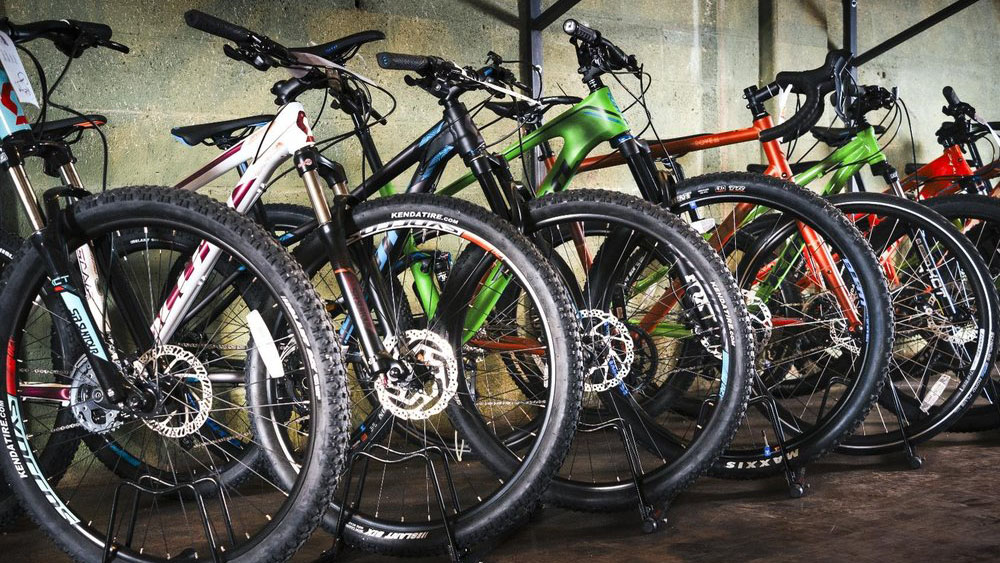
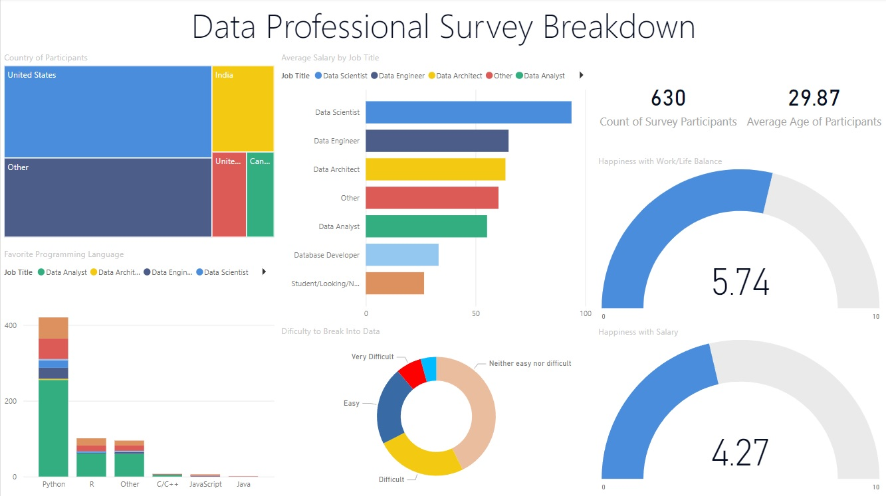

A guided data cleaning project using housing data from Nashville in SQL. I populated null fields with matching existing data in a joint table. I broke down columns that consisted of multiple data points into invidual columns then added the invidual columns back into the table for use. I standardized the data entries so that there was overall consistency. I removed duplicate entries and deleted unused columns.

The Capstone Project of the Google Data Analytics Course. I used R-Studio to combine 4 quarters of ride share data into one data frame, find the dirty data that needed to be cleaned, add calculated fields to have more oppurtunities to aggregate data, remove data points for out of rotation bicycles, create 2 vizualizations showing the ride length for casual riders vs members, and export an aggregated table as a CSV for sharing and further analysis.

Data Exploration project using a COVID 19 dataset in SQL where I looked into the total numbers of cases, new cases, deaths, population, death percentage compared to population, total cases per day as rolling percentage, the percent of the population that got infected, the numbed of deaths by continent, total number of vaccinations, set up the data for visualization, and showed a rough estimate percantage of vaccinated population.

My tableau link where you can find all of my tableau visualizations. Currently there is only the visualization of a Seattle airBnB project.
An automated Python script that checks the price of an item on the Amazon marketplace daily. The script records current and past prices as well as sends me an email if the price drops below a certain threshold.

Using Python, I utilized an API to pull in data on crypto currencys. I used this data to create a table that showed the percent change in the market along with a couple of visualizations to show the trends.

Using Excel, I took a bike sales data set and cleaned the data, created a dashboard with visiualizations, and created pivot tables using various metrics whithin the data.

Using a survey of people who work with data, I made various visiualizations showing where they live, their job title, their satisfaction with their job, their favorite programming language, and how hard it was for them to get into data.